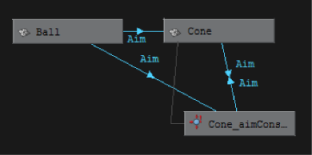

- 显示(Display)
- 形状节点(Shape Nodes)、隐藏的节点(Hidden Nodes)、对拓节点(Underworld Nodes)
-
默认情况下，场景层次不会显示形状节点、隐藏的节点或对拓节点。它只显示变换节点 - 保存属性和有关对象的变换和父子关系的其他信息的节点。
“形状节点”(Shape node) - 保存对象的几何体属性或对象的变换节点属性以外的属性。形状节点是变换节点的子对象。每个变换节点仅有一个形状节点。
“隐藏的节点”(Hidden node) - 使用 Maya 菜单栏中的“显示 > 隐藏”隐藏的任意对象。默认摄影机的顶部、正面、侧面和透视也是隐藏的节点。
“对拓节点”(Underworld node) - 形状节点下方的一对节点。在 NURBS 曲面上创建曲线时，Maya 会在曲面的形状节点下方生成一个对拓变换节点和形状节点。对拓节点的 CV 位置具有曲面上的 UV 坐标，而不是世界空间或局部空间中的坐标。
场景层次中的虚线表示到对拓节点的连接。到实例化对象的连接也通过虚线来表示。
注：使用场景文件保存“Hypergraph”选项设置。不会为 Maya 全局保存这些选项。
示例 1
如果选择“创建 > NURBS 基本体 > 球体”(Create > NURBS Primitives > Sphere)来创建球体，Maya 将创建一个变换节点和一个形状节点。
球体的形状节点包含球体形状的数学描述。球体的变换节点包含球体的位置、缩放、旋转等。形状节点是变换节点的子对象。
如果在“Hypergraph”中选择“选项 > 显示 > 形状节点”(Options > Display > Shape Nodes)，则场景层级会显示球体的以下节点：

Maya 为节点提供了默认名称，如上图所示。变换节点为 nurbsSphere1，形状节点为 nurbsSphereShape1。例如，如果将变换节点重命名为 Bubble，则 Maya 会将形状节点重命名为 BubbleShape。
如果重命名形状节点，则 Maya 不会重命名变换节点。Maya 不会将子对象的属性更改传递到其父对象。
示例 2
如果选择“创建 > NURBS 基本体 > 球体”(Create > NURBS Primitives > Sphere)来创建球体，Maya 将创建一个变换节点和一个球体节点。如果接下来选择“修改 > 激活”(Modify > Make Live)，然后使用“创建 > 曲线工具 > CV 曲线工具”(Create > Curve Tools > CV Curve Tool)在球体的曲面上绘制曲线并启用形状节点和对拓节点的显示，则场景层级显示如下：
Maya 为节点提供了显示的默认名称。变换节点为 nurbsSphere1，形状节点为 nurbsSphereShape1。curve1 节点和 curveShape1 节点是在球体的曲面上创建的曲线的对拓节点。
如果由于群组或复杂几何体而很难在工作区中选择曲面上的曲线，则此时您可以在显示对拓节点的场景层次中轻松进行选择。
- 表达式连接(Expression Connections)
-
启用时，将在由表达式连接的两个节点之间显示红色线。箭头表示连接方向。

创建一个名为 Ball 的 NURBS 球体和一个名为 Cone 的 NURBS 圆锥体。编写一个表达式将球的平移 Y 属性的值指定给圆锥体的平移 Y 属性。该表达式链接了这两个值。在视图中向上或向下移动 Ball（在 Y 轴方向）时，Cone 也会向上或向下移动相同的距离。
提示：通过选择“颜色设置”(Color Settings)并展开“Hypergraph/Hypershade”，可以更改连接线的颜色编码。
- 约束连接(Constraint Connections)
-
启用时，将在由约束连接的两个节点之间显示蓝色线。箭头表示连接方向。
提示：选择“Hypergraph”标记菜单中的“切换连接标签”(Toggle Connection Label)，可以显示每条连接线上的约束的类型。请参见在 Hypergraph 中显示连接。
 - 变形器连接(Deformer Connections)
-
启用时，将在由约束连接的两个节点之间显示绿色线。箭头表示连接方向。

- 显示缓存的连接(Show Cached Connections)
-
显示缓存的所有连接。
- 过滤器连接(Filter Connections)
-
通过它可以在“Hypergraph”中过滤表达式、约束和变形器连接。“Hypergraph”标记菜单中还提供以下选项（按住 Shift 键并单击鼠标右键）。注： 必须启用“表达式连接”(Expression Connections)、“约束连接”(Constraint Connections)和/或“变形器连接”(Deformer Connections)才能查看连接。
- 显示所有连接(Show All Connections)
-
显示场景层次中到/自每个节点的连接。
- 显示到/自选定对象的连接(Show Connections to/from Selected)
-
显示指向和来自选定节点的连接。
- 显示到选定对象的连接(Show Connection to Selected)
-
显示到选定节点的连接。
- 显示自选定对象的连接(Show Connection from Selected)
-
显示来自选定节点的连接。
- 图表布局样式(Graph Layout Style)
-
通过“图表布局样式”(Graph Layout Style)可以重新排列节点的布局样式以满足您的需要。该选项只在连接视图中可用。重新排列布局可使连接及其关系更有意义。
- 圆形布局(Circular Layout)
-
通过将节点放置在圆形簇排列中，以圆形方式显示“Hypergraph”连接。
- 层级布局(Hierarchical Layout)
-
通过将节点放置在不同的级别，在图中显示优先级关系。
- 正交布局(Orthogonal Layout)
-
将图中的节点沿垂直方向和水平方向对齐。
- 对称布局(Symmetric Layout)
-
对称显示“Hypergraph”节点（如果节点拓扑允许）。
- 树布局(Tree Layout)
-
将“Hypergraph”层次显示为与顶级节点和子节点处根节点的父/子关系进一步下移层次。
- 方向
-
选择下列方向选项之一：
- 水平(Horizontal)
-
水平显示“Hypergraph”层次。
- 垂直(Vertical)
-
按照垂直排列显示“Hypergraph”层次。
- 图例
-
按照图解排列显示“Hypergraph”层次，其中节点的间距相等且子对象显示在各自的父对象下方。
- 排布(Layout)
-
选择下列布局之一：
- 自由形式布局(Freeform Layout)
-
将节点或节点组放置在任意位置，无需符合结构化层次布局。
- 自动布局(Automatic Layout)
-
将节点自动分组到默认层次。
- 过渡 > 设置过渡动画，5/10/15/20 帧(Transitions > Animate Transitions, 5/10/15/20 frames)
-
默认情况下，更改图表的面板视图时，Maya 会立即从一个视图推拉到另一个视图。（例如，通过选择“视图 > 上一个视图”(View > Previous View)。） 可以降低 Maya 的视图之间的过渡速度，以便更易于查看视图更改操作。
20 帧时推拉速度最慢，5 帧时推拉速度最快。
- 更新 > 创建节点时(Update > On Nodes Creation)、选择时(On Selection)
-
添加或删除对象、渲染节点或场景中的其他项目时，“Hypergraph”会自动更新场景层级。
在场景层级或依存关系图中选择一个对象时，也会在工作区、“大纲视图”(Outliner)和 Maya 中的其他位置选择该对象。此外，在工作区、大纲视图和 Maya 中的其他位置选择一个对象时，也会在场景层级或依存关系图中选择该对象。
使用复杂场景时，或者检查节点或将节点拖动到自由形式层次中的新位置时，这些更新会使 Maya 操作变慢。可以禁用更新选项以提高操作速度。
- 节点显示覆盖颜色
-
在节点上显示层颜色。为节点着色可帮助在各自的层中组织和区分这些节点。
- 显示缓存的连接(Show Cached Connections)
-
显示缓存的所有连接。
- 热量贴图显示(Heat Map Display)
-
根据节点的计时性能在“Hypergraph”中为节点着色。计时值为 0 的节点显示为灰色，而具有正计时值的节点按照从蓝色到红色的递增着色显示。
虽然可以将各个“Hypergraph”窗口的“热量贴图显示”(Heat Map Display设置为启用或禁用，但所有“Hypergraph”窗口均受同一组“热量贴图显示”(Heat Map Display)选项的影响。
有关“热量贴图显示”(Heat Map Display)的详细信息，请参见 Hypergraph 提示中的“使用热量贴图显示监视性能”。
- 公制
-
确定节点的计时公制。
- 类型
-
确定计时类型。
- 阈值(Threshold)
-
确定自定义阈值如何影响“热量贴图显示”(Heat Map Display)。
重映射颜色根据当前阈值来调整颜色方案，而不是根据最高/最低计时值节点。
隐藏节点会自动隐藏计时值高于“阈值上限”(Upper threshold)或低于“阈值下限”(Lower threshold)的所有节点。
- 阈值上限(Upper threshold)/阈值下限(Lower threshold)
-
可以设置“热量贴图显示”(Heat Map Display)阈值上限（红色）和下限（蓝色）的自定义边界。
- 选择中止(Selection cutoff)
-
允许您相对于阈值超出中止值一定的百分比来添加节点。
- 计时(Timing)
-
启用和禁用全局节点计时。
- 重置计时器(Reset timers)
-
将所有节点计时器重置为 0。
- 重画 Hypergraph (Redraw HyperGraph(s))
-
重新生成并重画当前已启用“热量贴图显示”(Heat Map Display)模式的所有 HyperGraph 窗口。
- 显示关系连接(Show Relationship Connections)
-
显示不代表数据流的连接。
- 合并连接(Merge Connections)
-
将两个节点之间的多个连接显示为单条粗线。有关详细信息，请参见 Hypergraph 提示中的“合并连接”。
- 不透明资产(Opaque Assets)
-
显示背景不透明的展开资产节点。